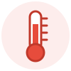

Bem-vindo!
Sabe quando você está com enjoo, dor de cabeça ou azia e não sabe qual remédio pode tomar? Este site reúne, de forma simples e rápida, os remédios mais comuns que podem ser comprados sem receita na farmácia, para que serve cada um e quais cuidados ter.
Como usar o site
- Escolha o seu sintoma no menu ou na tabela abaixo.
- Leia a resposta rápida no começo da página.
- Confira os cuidados e quando é hora de procurar um médico.
Escolha o seu sintoma
 Enjoo e vômito
Enjoo e vômito
Mal-estar no estômago e vontade de vomitar |
 Dor e febreDor de cabeça, dor no corpo e febre |
 Azia, gases e cólica
Azia, gases e cólica
Queimação, barriga estufada e cólica |
 Diarreia
Diarreia
Intestino solto e risco de desidratação |
 Alergia
Alergia
Espirros, nariz escorrendo e coceira |
 Emergência? Ligue 192
Emergência? Ligue 192
SAMU, atendimento gratuito em todo o Brasil |
O que é um remédio "sem receita"?
São os MIPs (Medicamentos Isentos de Prescrição). A Anvisa, que controla os remédios no Brasil, tem uma lista oficial com eles. São remédios para problemas leves e passageiros. Para saber se um remédio precisa de receita, olhe a tarja da caixa:
| Tarja | O que significa |
|---|---|
| Sem tarja | Remédio isento de prescrição (MIP). Pode ser comprado sem receita. |
| Tarja vermelha | Precisa de receita médica. Em alguns casos, como nos antibióticos, a farmácia fica com a receita. |
| Tarja preta | Remédio controlado, que age no sistema nervoso. Precisa de uma receita especial, que fica retida na farmácia. |
Cuidados antes de tomar
Remédio sem receita também é remédio: ele pode causar alergia e fazer mal se for tomado em excesso ou junto com outros remédios.
- Leia a bula, principalmente as partes "quando não devo usar" e "como devo usar".
- Respeite a dose e o intervalo entre as doses.
- Não tome dois remédios com a mesma substância ao mesmo tempo.
- Grávidas, mulheres que amamentam, crianças, idosos e quem tem alguma doença ou já toma outros remédios devem pedir orientação antes.
- Guarde os remédios em lugar seco, longe do sol e longe do alcance de crianças.
Dica: o farmacêutico pode tirar suas dúvidas de graça na hora da compra. Sempre conte se você tem alguma doença, se está grávida ou se já toma outro remédio.
Telefones úteis
- 192 - SAMU, para emergências médicas.
- 0800 722 6001 - Disque-Intoxicação da Anvisa, ligação gratuita, para quando alguém toma remédio demais ou por engano.
As informações deste site foram tiradas da lista oficial de MIPs da Anvisa (Instrução Normativa nº 285/2024, atualizada pela IN nº 404/2025), das bulas dos medicamentos e de orientações do Ministério da Saúde.